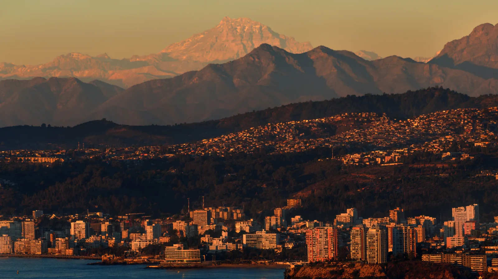

O2 · Oeste
O2 · Westen
O2 · West
Aconcagua
Y subí hasta el Aconcagua y descubrí el oro blanco de la nieve y comprendí América.
Und ich stieg hinauf zum Aconcagua und entdeckte das weiße Gold des Schnees und verstand Amerika.
And I climbed up to Aconcagua and discovered the white gold of the snow and understood America.
Información
El Parque Provincial Aconcagua protege 83.971 hectáreas en el departamento de Las Heras, Mendoza, entre los 2.400 y los 6.960 metros sobre el nivel del mar. Se creó por la Ley Provincial 4807, de 1983.
El cerro Aconcagua llega a los 6.962 metros: es la cumbre más alta de América y la más alta del mundo fuera de Asia.
Information
El Parque Provincial Aconcagua protege 83.971 hectáreas en el departamento de Las Heras, Mendoza, entre los 2.400 y los 6.960 metros sobre el nivel del mar. Se creó por la Ley Provincial 4807, de 1983.
El cerro Aconcagua llega a los 6.962 metros: es la cumbre más alta de América y la más alta del mundo fuera de Asia.
Information
El Parque Provincial Aconcagua protege 83.971 hectáreas en el departamento de Las Heras, Mendoza, entre los 2.400 y los 6.960 metros sobre el nivel del mar. Se creó por la Ley Provincial 4807, de 1983.
El cerro Aconcagua llega a los 6.962 metros: es la cumbre más alta de América y la más alta del mundo fuera de Asia.
Y vi a los hombres votar una ley para que las máquinas puedan llegar más cerca.
Und ich sah die Menschen ein Gesetz beschließen, damit die Maschinen näher herankommen können.
And I saw men vote a law so the machines could come closer.
El yacimiento San Jorge está en la estancia Yalguaraz, distrito de Uspallata, departamento de Las Heras: el mismo departamento que el Parque Provincial Aconcagua, unos 37 kilómetros al norte de la ciudad de Uspallata. Es un pórfido de cobre con oro en menor proporción, conocido desde los años sesenta, y el proyecto prevé explotación a cielo abierto durante unos dieciséis años sobre una superficie afectada de 475.870 metros cuadrados.
En 2011 la Legislatura de Mendoza rechazó la Declaración de Impacto Ambiental del proyecto. En 2025 la aprobó: la ratificación quedó formalizada en la Ley provincial 9684, que habilita a «PSJ Cobre Mendocino» a avanzar en Uspallata.
El parque en sí no se achicó. En 2024, otra ley actualizó la zonificación del Parque Provincial Aconcagua y amplió el área protegida un 21 %, de 67.438 a 85.699 hectáreas, incorporando zonas nuevas como la Quebrada de Matienzo. Las dos cosas ocurrieron casi a la vez: el parque creció, y en el mismo corredor que lleva hacia él se votó habilitar una mina de cobre a cielo abierto.
El yacimiento San Jorge está en la estancia Yalguaraz, distrito de Uspallata, departamento de Las Heras: el mismo departamento que el Parque Provincial Aconcagua, unos 37 kilómetros al norte de la ciudad de Uspallata. Es un pórfido de cobre con oro en menor proporción, conocido desde los años sesenta, y el proyecto prevé explotación a cielo abierto durante unos dieciséis años sobre una superficie afectada de 475.870 metros cuadrados.
En 2011 la Legislatura de Mendoza rechazó la Declaración de Impacto Ambiental del proyecto. En 2025 la aprobó: la ratificación quedó formalizada en la Ley provincial 9684, que habilita a «PSJ Cobre Mendocino» a avanzar en Uspallata.
El parque en sí no se achicó. En 2024, otra ley actualizó la zonificación del Parque Provincial Aconcagua y amplió el área protegida un 21 %, de 67.438 a 85.699 hectáreas, incorporando zonas nuevas como la Quebrada de Matienzo. Las dos cosas ocurrieron casi a la vez: el parque creció, y en el mismo corredor que lleva hacia él se votó habilitar una mina de cobre a cielo abierto.
El yacimiento San Jorge está en la estancia Yalguaraz, distrito de Uspallata, departamento de Las Heras: el mismo departamento que el Parque Provincial Aconcagua, unos 37 kilómetros al norte de la ciudad de Uspallata. Es un pórfido de cobre con oro en menor proporción, conocido desde los años sesenta, y el proyecto prevé explotación a cielo abierto durante unos dieciséis años sobre una superficie afectada de 475.870 metros cuadrados.
En 2011 la Legislatura de Mendoza rechazó la Declaración de Impacto Ambiental del proyecto. En 2025 la aprobó: la ratificación quedó formalizada en la Ley provincial 9684, que habilita a «PSJ Cobre Mendocino» a avanzar en Uspallata.
El parque en sí no se achicó. En 2024, otra ley actualizó la zonificación del Parque Provincial Aconcagua y amplió el área protegida un 21 %, de 67.438 a 85.699 hectáreas, incorporando zonas nuevas como la Quebrada de Matienzo. Las dos cosas ocurrieron casi a la vez: el parque creció, y en el mismo corredor que lleva hacia él se votó habilitar una mina de cobre a cielo abierto.
Galería
Galerie
Gallery


Fuentes
Quellen
Sources
- Gobierno de Mendoza, Plan de gestión y uso público del Parque Provincial Aconcagua (PDF) — https://www.mendoza.gov.ar/wp-content/uploads/sites/71/2022/08/Plan-de-Manejo-Aconcagua-Tomo-II.pdf consultado 2026-10-06abgerufen 2026-10-06accessed 2026-10-06
- Sistema de Información de Biodiversidad, Argentina, Parque Provincial Aconcagua — https://sib.gob.ar/index.php/areas-protegidas/parque-provincial-aconcagua-mendoza consultado 2026-10-06abgerufen 2026-10-06accessed 2026-10-06
- Boletín Oficial de Mendoza, Ley N° 9684, ratificación de la Declaración de Impacto Ambiental de PSJ Cobre Mendocino — https://boe.mendoza.gov.ar/publico/pdf_pedido/8c95cbafe2784077ba438432527efc22fb84128b58 consultado 2026-10-06abgerufen 2026-10-06accessed 2026-10-06
- Gobierno de Mendoza, San Jorge: se emitió la Declaración de Impacto Ambiental — http://www.prensa.mendoza.gov.ar/san-jorge-se-emitio-la-declaracion-de-impacto-ambiental/ consultado 2026-10-06abgerufen 2026-10-06accessed 2026-10-06
- Gobierno de Mendoza, Dirección de Minería, Informe de Impacto Ambiental, resumen ejecutivo (PDF) — https://www.mendoza.gov.ar/wp-content/uploads/sites/105/2025/02/Copia-de-ORDEN-0004-IF-2025-00279594-GDEMZA-MINERIA.pdf consultado 2026-10-06abgerufen 2026-10-06accessed 2026-10-06
- Honorable Cámara de Diputados de Mendoza, Media sanción a la actualización de la zonificación del Parque Provincial Aconcagua — https://www.hcdmza.gob.ar/site/noticias/8890-media-sancion-a-la-actualizacion-de-la-zonificacion-del-parque-provincial-aconcagua consultado 2026-10-06abgerufen 2026-10-06accessed 2026-10-06